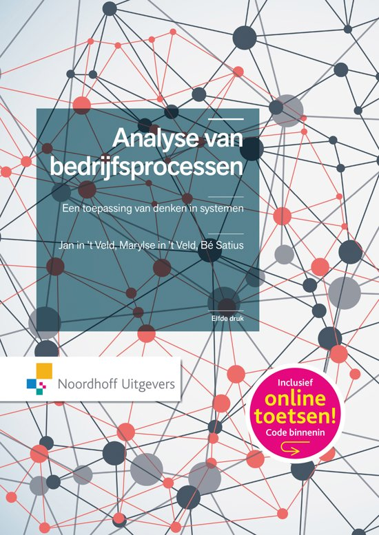
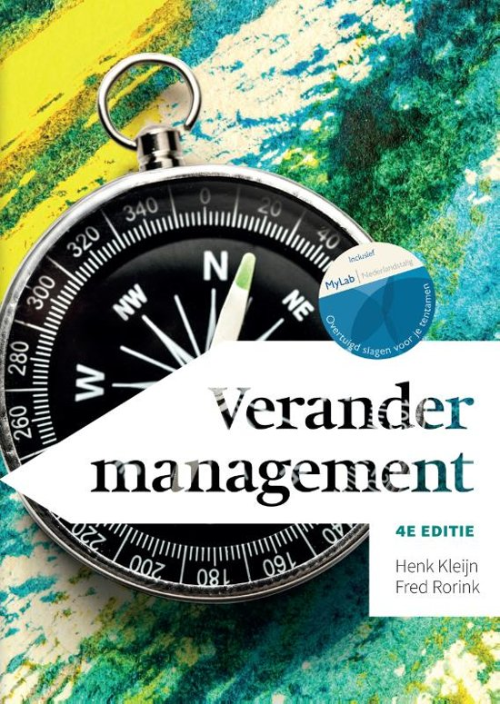
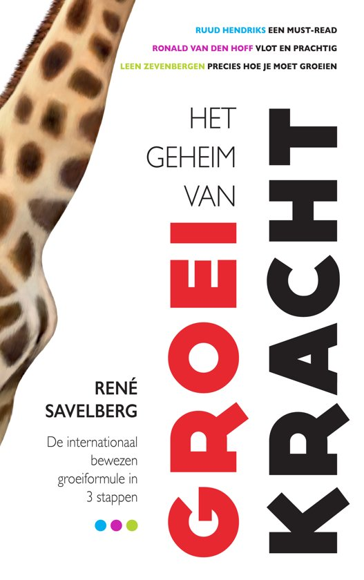
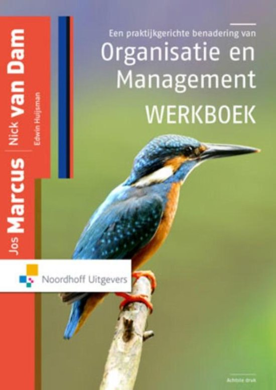

Wij hebben extra kennis over op gebied van Smart Business opgedaan door diverse hoofdstukken van een aantal bedrijfskundige boeken te lezen. Hieronder de boekenlijst:

Boek: Analyse van Bedrijfsprocessen | 11e druk 2015 | In ‘t Veld, Slatius en In ‘t Veld | Noordhoff Uitgevers BV, Groningen | ISBN: 978-90-01-85089-0
H3 & H6 betrekking tot procesbeheersing
H7 & §8.4 betrekking tot Steady State onderzoek (black-box processen)
Boek: Projectmanagement | 7e druk | Roel Grit | Noordhoff Uitgevers BV, Groningen
H1 betrekking tot Plan van Aanpak, Programma van Eisen en Agile / Scrum
H2 betrekking tot klantbehoeften vertalen
H3.1 - 3.8 betrekking tot SMART requirements
H9 betrekking tot projectverslag schrijven

Boek: Verandermanagement | 4e editie 2016 | Kleijn, H & Rorink, F |
H6 betrekking tot veranderstrategieën
en situationele kenmerken
H7 betrekking tot interventies
H8 betrekking tot organisatiedynamica en cultuurverandering

Boek: Het geheim van groeikracht | 1e druk 2014 | Rene Savelberg |
Uitgeverij Haystack, Zaltbommel | ISBN: 978-94-61-26083-3
H1 betrekking tot standaardisatie
H5 betrekking tot management van personeel
H7 betrekking tot verkooporganisaties
H8 betrekking tot feedbackloops

Boek: Een praktijkgerichte benadering van Organisatie en Management | 8e druk 2015 | Marcus J,. & van Dam, N | Noordhoff Uitgevers BV, Groningen | ISBN: 978-90-01-85024-1
H4 betrekking tot samenwerkingsverbanden
H8 betrekking tot besturing
H9 betrekking tot structurering
H10 betrekking tot organisatieontwikkeling